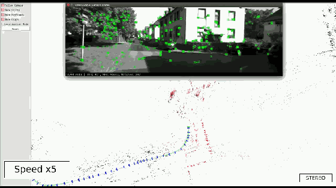
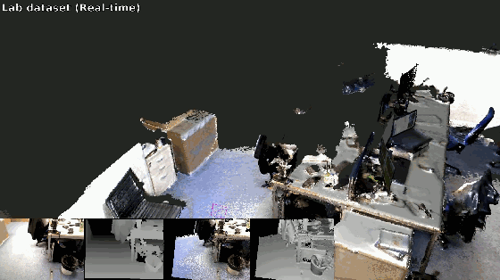
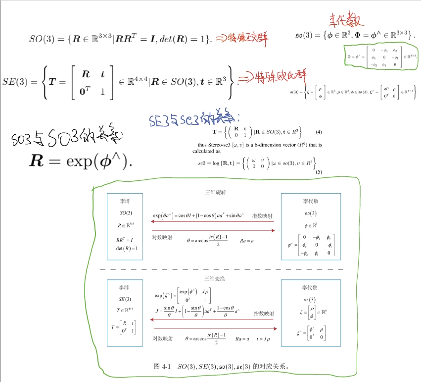

引言
从事SLAM领域的研发已经接近5年了，但是对于一些基础的概念和知识点仍然不够清晰。因此，我决定写一篇博客来总结一下视觉SLAM的基础知识，主要为了巩固相关的知识体系。
本博文的内容主要参考了《SLAM十四讲》和视觉SLAM入门系列文章。其余参考资料也会在文末列出。
本博文仅供本人学习记录用，不做任何商业用途。
视觉SLAM目前主要有两大方向：基于学习的方法和基于几何的方法。本博文主要介绍基于几何方法的视觉SLAM。而learning-based的其实也是以几何的方法为基础，更多关于learning-based VO/SLAM的介绍请见博客Link.


李群与李代数
关于他们二者的关系，看下面手写的笔记吧

非线性优化
什么是雅可比矩阵
什么是Hessian矩阵
SLAM中的各种地图表达方式
SLAM系列demo展示
展开查看
开源代码event-based SLAM以及单目稠密重建
Visual-SLAM系列代码改进与解读
Learning-based VO系列代码改进与解读
3DGS-SLAM系列代码改进与解读
LiDAR-SLAM系列代码改进与解读
LOAM系列算法的解读与复现demo请见博客Link.
Event-based SLAM系列代码改进与解读
参考资料
《SLAM十四讲》
- 原来如此！简单总结SLAM中的各种地图